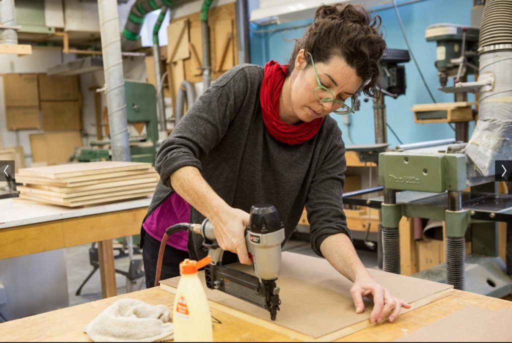
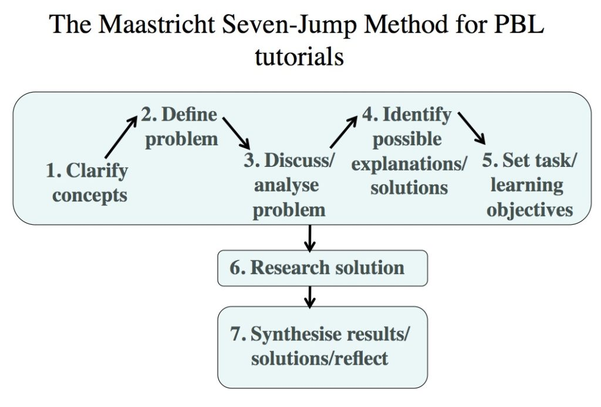
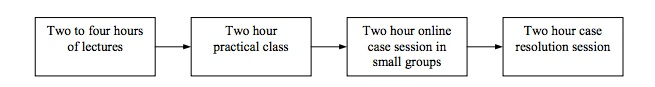
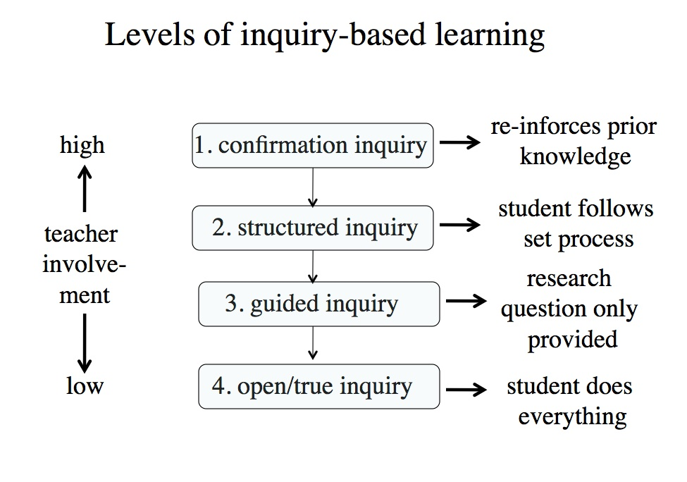
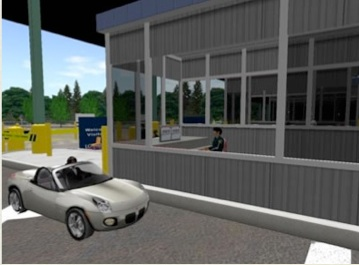

3.5 Aprender fazendo: Aprendizagem experiencial


Aprender fazendo é uma das cinco abordagens de ensino de Pratt. Há uma série de abordagens ou termos diferentes sob a ampla designação de aprendizagem experiencial, tais como aprendizagem cooperativa, aprendizagem de aventura e aprendizado de ofício (apprenticeship). Usarei o termo “aprendizagem experiencial” como um termo abrangente para cobrir essa ampla variedade de abordagens de aprender fazendo. Tratarei do aprendizado de ofício em uma seção separada (Capítulo 3.6) por causa de seu papel tradicional (embora tácito) na preparação de instrutores de universidades e faculdades, embora possa ser visto como apenas um dos vários métodos de aprendizagem experiencial.
3.5.1. O que é aprendizagem experiencial?
A Universidade Simon Fraser (2010) definiu a aprendizagem experiencial como:
o engajamento estratégico e ativo dos estudantes em oportunidades de aprender fazendo, e a reflexão sobre essas atividades, o que os capacita a aplicar seus conhecimentos teóricos em empreendimentos práticos em uma infinidade de cenários dentro e fora da sala de aula.
Existem muitos teóricos diferentes nessa área, como John Dewey (1938) e, mais recentemente, David Kolb (1984). Há uma ampla gama de modelos de design que visam incorporar a aprendizagem em contextos do mundo real, incluindo:
- trabalho em laboratório, oficina ou ateliê (estúdio);
- aprendizado de ofício (apprenticeship);
- aprendizagem baseada em problemas;
- aprendizagem baseada em casos;
- aprendizagem baseada em projetos;
- aprendizagem baseada em investigação (inquiry-based learning);
- aprendizagem cooperativa (baseada no trabalho ou na comunidade).
O foco aqui é sobre algumas das principais maneiras pelas quais a aprendizagem experiencial pode ser projetada e entregue, com atenção especial ao uso da tecnologia, e de maneiras que ajudem a desenvolver os conhecimentos e competências necessários na era digital. (Para uma análise mais detalhada da aprendizagem experiencial, consulte Moon, 2004).
3.5.2 Princípios centrais de design
A aprendizagem experiencial concentra-se na reflexão dos aprendizes sobre sua experiência de realizar algo, a fim de obter percepção conceitual e também conhecimento prático. O modelo de aprendizagem experiencial de Kolb sugere quatro etapas nesse processo:
- experimentação ativa;
- experiência concreta;
- observação reflexiva;
- conceituação abstrata.
A aprendizagem experiencial é uma das principais formas de ensino na Universidade de Waterloo. Seu site lista as condições necessárias para garantir que a aprendizagem experiencial seja eficaz, conforme identificado pela Association for Experiential Education.
A próxima seção examina diferentes formas pelas quais esses princípios foram aplicados.
3.5.3 Modelos de design experiencial
Existem muitos modelos de design diferentes para a aprendizagem experiencial, mas eles também possuem muitas características em comum.
3.5.3.1 Trabalho em laboratório, oficina ou ateliê (estúdio)


Hoje, consideramos quase como certo que as aulas de laboratório são uma parte essencial do ensino de ciências e engenharia. Oficinas e ateliês são considerados críticos para muitas formas de treinamento profissionalizante ou para o desenvolvimento das artes criativas. Laboratórios, oficinas e ateliês cumprem uma série de funções ou metas importantes, que incluem:
- dar aos estudantes experiência prática na escolha e no uso adequado de equipamentos científicos, de engenharia ou técnicos comuns;
- desenvolver habilidades motoras no uso de ferramentas científicas, de engenharia ou industriais, ou de meios criativos;
- dar aos estudantes uma compreensão das vantagens e limitações dos experimentos de laboratório;
- permitir que os estudantes vejam o trabalho de ciências, engenharia ou técnico “em ação”;
- permitir que os estudantes testem hipóteses ou vejam quão bem os conceitos, teorias e procedimentos realmente funcionam quando testados sob condições de laboratório;
- ensinar os estudantes a projetar e/ou realizar experimentos;
- permitir que os estudantes projetem e criem objetos ou equipamentos em diferentes meios físicos.
Um valor pedagógico importante das aulas de laboratório é que elas permitem que os estudantes passem do concreto (observação de fenômenos) para o abstrato (compreensão dos princípios ou teorias que derivam da observação de fenômenos). Outro é que o laboratório introduz os estudantes em um aspecto cultural crítico da ciência e da engenharia: o de que todas as ideias precisam ser testadas de maneira rigorosa e particular para que sejam consideradas “verdadeiras”.
Uma grande crítica aos laboratórios ou oficinas educacionais tradicionais é que eles são limitados nos tipos de equipamentos e experiências que cientistas, engenheiros e profissionais técnicos necessitam hoje. À medida que os equipamentos científicos, de engenharia e técnicos tornam-se mais sofisticados e caros, fica cada vez mais difícil fornecer aos estudantes, especialmente nas escolas, mas também nas faculdades e universidades, acesso direto a tais equipamentos. Além disso, laboratórios ou oficinas de ensino tradicionais demandam muito capital e trabalho e, portanto, não são facilmente escaláveis, o que constitui uma desvantagem crítica em tempos de rápida expansão das oportunidades educacionais.
Como o trabalho de laboratório é uma parte tão aceita do ensino de ciências, vale a pena lembrar que o ensino de ciências por meio do trabalho de laboratório é, em termos históricos, um desenvolvimento bastante recente. Na década de 1860, nem a Universidade de Oxford nem a de Cambridge estavam dispostas a ensinar ciência empírica. Thomas Huxley, portanto, desenvolveu um programa na Royal School of Mines (uma faculdade constituinte do que é hoje o Imperial College, da Universidade de Londres) para ensinar professores de escola a ensinar ciências, incluindo como planejar laboratórios para o ensino de ciências experimentais para crianças em idade escolar, um método que ainda é o mais comumente usado hoje, tanto nas escolas quanto nas universidades.
Ao mesmo tempo, o progresso científico e de engenharia desde o século XIX resultou em outras formas de teste e validação científica que ocorrem fora, pelo menos, do tipo de “laboratório molhado” tão comum em escolas e universidades. Exemplos são os aceleradores nucleares, a nanotecnologia, a mecânica quântica e a exploração espacial. Muitas vezes, a única forma de observar ou registrar fenômenos nesses contextos é de forma remota ou digital. Também é importante ter clareza sobre os objetivos do trabalho de laboratório, oficina e ateliê. Pode haver agora outras formas mais práticas, mais econômicas ou mais poderosas de alcançar esses objetivos por meio do uso de novas tecnologias, como laboratórios remotos, simulações e aprendizagem experiencial. Estas serão examinadas com mais detalhes adiante neste livro.
3.5.3.2 Aprendizagem baseada em problemas
A primeira forma de aprendizagem baseada em problemas (PBL) sistematizada foi desenvolvida em 1969 por Howard Barrows e colaboradores na Faculdade de Medicina da Universidade McMaster, no Canadá, de onde se espalhou para muitas outras universidades, faculdades e escolas. Esta abordagem é cada vez mais utilizada em áreas temáticas onde a base de conhecimento está em rápida expansão e onde é impossível para os estudantes dominarem todo o conhecimento da área em um período limitado de estudos. Trabalhando em grupos, os estudantes identificam o que já sabem, o que precisam saber, e como e onde acessar novas informações que possam levar à resolução do problema. O papel do instrutor (geralmente chamado de tutor no PBL clássico) é crítico na facilitação e orientação do processo de aprendizagem.
Geralmente o PBL segue uma abordagem fortemente sistematizada para resolver problemas, embora as etapas detalhadas e a sequência tendam a variar em certa medida, dependendo da área temática. O exemplo a seguir é típico:



Tradicionalmente, as primeiras cinco etapas seriam realizadas em um pequeno grupo presencial de 20 a 25 estudantes, com a sexta etapa exigindo estudo individual ou em pequenos grupos (quatro ou cinco estudantes) fora da sala de aula, e com a sétima etapa sendo concluída em uma reunião de grupo completo com o tutor. No entanto, esta abordagem também se presta muito à aprendizagem combinada (blended learning), em que a busca de soluções (etapa 6) é feita principalmente on-line, embora alguns professores tenham gerenciado todo o processo de forma on-line, utilizando uma combinação de webconferências síncronas e fóruns de discussão assíncronos.
Desenvolver um currículo completo de aprendizagem baseada em problemas é desafiador, pois os problemas devem ser cuidadosamente escolhidos, aumentando em complexidade e dificuldade ao longo do curso, e devem ser escolhidos de modo a cobrir todos os componentes exigidos do currículo. Os estudantes frequentemente consideram a abordagem de aprendizagem baseada em problemas desafiadora, particularmente nos estágios iniciais, onde sua base de conhecimento fundamental pode não ser suficiente para resolver alguns dos problemas. (O termo “sobrecarga cognitiva” tem sido usado para descrever esta situação.) Outros argumentam que as aulas expositivas fornecem uma maneira mais rápida e condensada de cobrir os mesmos tópicos. A avaliação também precisa ser cuidadosamente planejada, especialmente se um exame final tiver grande peso nas notas, para garantir que as habilidades de resolução de problemas, bem como a cobertura do conteúdo, sejam medidas.
No entanto, pesquisas (ver, por exemplo, Strobel e van Barneveld, 2009) constataram que a aprendizagem baseada em problemas é melhor para a retenção do material a longo prazo e para o desenvolvimento de competências replicáveis, bem como para melhorar as atitudes dos estudantes em relação à aprendizagem. Existem hoje muitas variações da abordagem PBL “pura”, com problemas sendo propostos após o conteúdo inicial ter sido coberto de formas mais tradicionais, como aulas expositivas ou leituras prévias, por exemplo.
A metodologia de aprendizagem baseada em problemas, contudo, é uma ferramenta essencial para o desenvolvimento dos conhecimentos e competências necessários em uma sociedade digital.
3.5.3.3 Aprendizagem baseada em casos
Com o ensino baseado em casos, os estudantes desenvolvem habilidades de pensamento analítico e julgamento reflexivo ao ler e discutir cenários complexos do mundo real.
A aprendizagem baseada em casos é às vezes considerada uma variação do PBL, enquanto outros a veem como um modelo de design em si. Assim como no PBL, a aprendizagem baseada em casos utiliza um método de investigação guiada, mas geralmente exige que os estudantes tenham um nível de conhecimento prévio que possa ajudar na análise do caso. Normalmente há mais flexibilidade na abordagem de aprendizagem baseada em casos em comparação com o PBL. A aprendizagem baseada em casos é particularmente popular no ensino de negócios, escolas de direito e prática clínica em medicina, mas pode ser usada em muitas outras áreas do conhecimento.
Herreid (2004) fornece onze regras básicas para a aprendizagem baseada em casos:
- Conta uma história.
- Foca em uma questão que desperte interesse.
- Situa-se nos últimos cinco anos.
- Cria empatia com os personagens principais.
- Inclui citações diretas dos personagens.
- É relevante para o leitor.
- Deve ter utilidade pedagógica.
- Provoca conflito.
- Força a tomada de decisões.
- Possui generalidade.
- É curto.
Usando exemplos da prática clínica na medicina, Irby (1994) recomenda cinco etapas na aprendizagem baseada em casos:
- ancorar o ensino em um caso (cuidadosamente escolhido);
- envolver ativamente os aprendizes na discussão, análise e formulação de recomendações sobre o caso;
- modelar o pensamento e a ação profissional como professor ao discutir o caso com os aprendizes;
- fornecer orientação e feedback aos aprendizes em suas discussões;
- criar um ambiente de aprendizagem colaborativo onde todos os pontos de vista sejam respeitados.
A aprendizagem baseada em casos pode ser particularmente valiosa para lidar com tópicos ou problemas complexos e interdisciplinares que não têm soluções óbvias de “certo ou errado”, ou onde os aprendizes precisam avaliar e decidir sobre explicações concorrentes e alternativas. A aprendizagem baseada em casos também pode funcionar bem em ambientes combinados e totalmente on-line. Marcus, Taylor e Ellis (2004) utilizaram o seguinte modelo de design para um projeto de aprendizagem baseada em casos na medicina veterinária:



Outras configurações são, naturalmente, possíveis, dependendo dos requisitos da disciplina.
3.5.3.4 Aprendizagem baseada em projetos
A aprendizagem baseada em projetos é semelhante à baseada em casos, mas tende a ser mais longa e mais ampla em escopo, e com ainda mais autonomia/responsabilidade do estudante no sentido de escolher subtópicos, organizar seu trabalho e decidir quais métodos usar para conduzir o projeto. Os projetos são geralmente baseados em problemas do mundo real, o que dá aos estudantes um senso de responsabilidade e apropriação em suas atividades de aprendizagem.
Mais uma vez, existem várias boas práticas ou diretrizes para um trabalho de projeto bem-sucedido. Por exemplo, Larmer e Mergendoller (2010) argumentam que todo bom projeto deve atender a dois critérios:
- os estudantes devem perceber o trabalho como pessoalmente significativo, como uma tarefa que importa e que desejam fazer bem;
- um projeto significativo cumpre um propósito educacional.
O principal perigo com a aprendizagem baseada em projetos é que o projeto pode assumir uma dinâmica própria, fazendo com que não apenas os estudantes, mas também o professor percam o foco nos objetivos centrais de aprendizagem, ou que áreas importantes do conteúdo fiquem sem cobertura. Assim, a aprendizagem baseada em projetos necessita de um acompanhamento cuidadoso por parte do professor.
3.5.3.5 Aprendizagem baseada em investigação (inquiry-based learning)
A aprendizagem baseada em investigação (IBL) é semelhante à baseada em projetos, mas o papel do professor é um pouco diferente. Na aprendizagem baseada em projetos, o professor define a “pergunta norteadora” e desempenha um papel mais ativo na condução dos estudantes ao longo do processo. Na aprendizagem baseada em investigação, o aprendiz explora um tema e escolhe um assunto para pesquisa, desenvolve um plano de investigação e chega a conclusões, embora o professor geralmente esteja disponível para fornecer ajuda e orientação quando necessário.
Banchi e Bell (2008) sugerem que existem diferentes níveis de investigação, e os estudantes precisam começar no primeiro nível e trabalhar através dos outros níveis até chegarem à investigação “verdadeira” ou “aberta”, conforme se segue:



Pode-se ver que o quarto nível de investigação descreve o processo de tese de pós-graduação, embora os defensores da aprendizagem baseada em investigação defendam seu valor em todos os níveis da educação.
3.5.4 Aprendizagem experiencial em ambientes virtuais
Alguns defensores da aprendizagem experiencial são muito críticos da aprendizagem on-line, pois argumentam ser impossível contextualizar a aprendizagem em exemplos do mundo real. No entanto, trata-se de uma simplificação exagerada, existindo contextos em que a aprendizagem on-line pode ser usada com grande eficácia para apoiar ou desenvolver a aprendizagem experiencial, em todas as suas variações:
- aprendizagem combinada ou invertida (blended/flipped): embora as sessões em grupo frequentemente iniciem o processo e/ou tragam um problema ou projeto a uma conclusão, elas são geralmente realizadas em uma sala de aula ou laboratório. Contudo, os estudantes podem realizar cada vez mais a pesquisa e a coleta de informações acessando recursos on-line, utilizando recursos multimídia on-line para criar relatórios ou apresentações, e colaborando on-line por meio de projetos de grupo ou da avaliação crítica do trabalho uns dos outros;
- totalmente on-line: cada vez mais, os professores estão descobrindo que a aprendizagem experiencial pode ser aplicada de forma totalmente on-line, por meio de uma combinação de ferramentas síncronas (como webconferências), ferramentas assíncronas (como fóruns de discussão e/ou mídias sociais para trabalho em grupo), portfólios eletrônicos e multimídia para relatórios, e laboratórios remotos para o trabalho experimental.
De fato, existem circunstâncias em que é impraticável, perigoso ou caro demais usar a aprendizagem experiencial no mundo real. A aprendizagem on-line pode ser usada para simular condições reais e reduzir o tempo para dominar uma habilidade. Simuladores de voo são usados há muito tempo para treinar pilotos comerciais, permitindo que os pilotos em formação dediquem menos tempo para dominar os fundamentos em aeronaves reais. Os simuladores de voo comerciais ainda são extremamente caros para construir e operar, mas nos últimos anos o custo de criação de simulações realistas caiu drasticamente.



Os professores do Loyalist College criaram um posto de fronteira virtual totalmente funcional e um carro virtual no Second Life para treinar agentes dos Serviços de Fronteira do Canadá. Cada estudante assume o papel de um agente, com seu avatar entrevistando os avatares dos viajantes que desejam entrar no Canadá. Outros estudantes interpretam os viajantes. Toda a comunicação é feita por voz no Second Life, com as pessoas que interpretam os viajantes em uma sala separada da dos estudantes. Cada estudante entrevista três ou quatro viajantes e toda a classe observa as interações e discute as situações e as respostas. Um local secundário para busca de veículos apresenta um carro virtual que pode ser totalmente desmontado para que os estudantes aprendam todos os locais possíveis onde o contrabando pode ser ocultado. Essa aprendizagem é reforçada com uma visita à oficina mecânica do Loyalist College e a busca em um carro real. Os estudantes da área de alfândega e imigração são avaliados em suas técnicas de entrevista como parte de suas notas finais. Os estudantes que participaram do primeiro ano da simulação de fronteira no Second Life obtiveram um desempenho de notas 28% superior ao da turma anterior, que não utilizou o mundo virtual. A turma seguinte, utilizando o Second Life, obteve uma pontuação 9% superior. Mais detalhes podem ser encontrados aqui.
A equipe da Divisão de Gestão de Emergências do Justice Institute of British Columbia desenvolveu uma ferramenta de simulação chamada Praxis, que ajuda a dar vida a incidentes críticos introduzindo simulações do mundo real em programas de treinamento. Como os participantes podem acessar a Praxis via web, ela oferece flexibilidade para a entrega de exercícios de treinamento imersivos, interativos e baseados em cenários a qualquer momento e em qualquer lugar. Uma emergência típica pode ser um grande incêndio em um armazém que contenha produtos químicos perigosos. Os primeiros respondentes em formação, que incluirão bombeiros, policiais e pessoal paramédico, bem como engenheiros municipais e autoridades locais, são alertados em seus celulares ou tablets e precisam responder em tempo real a um cenário que se desenvolve rapidamente, gerenciado por um facilitador especializado, seguindo procedimentos previamente ensinados e também disponíveis em seus equipamentos móveis. Todo o processo é gravado e seguido posteriormente por uma sessão de avaliação presencial.
Mais uma vez, os modelos de design não são, na maioria dos casos, dependentes de qualquer mídia específica. A pedagogia se transfere facilmente entre diferentes métodos de entrega. Aprender fazendo é um método importante para desenvolver muitas das competências necessárias na era digital.
3.5.5 Pontos fortes e fracos dos modelos de aprendizagem experiencial
A forma como avaliamos os designs de aprendizagem experiencial depende, em parte, de nossa posição epistemológica. Os construtivistas apoiam fortemente os modelos de aprendizagem experiencial, enquanto aqueles com uma posição objetivista forte costumam ser muito céticos quanto à eficácia desta abordagem. No entanto, a aprendizagem baseada em problemas provou ser muito popular em muitas instituições de ensino de ciências ou medicina, e a aprendizagem baseada em projetos é utilizada em muitas áreas do conhecimento e níveis de ensino. Há evidências de que a aprendizagem experiencial, quando devidamente projetada, é altamente envolvente para os estudantes e leva a uma melhor memorização a longo prazo. Os defensores também afirmam que ela leva a uma compreensão profunda e desenvolve competências para a era digital, como resolução de problemas, pensamento crítico, melhores habilidades de comunicação e gestão do conhecimento. Permite que os aprendizes gerenciem melhor situações altamente complexas que cruzam fronteiras disciplinares e áreas de conhecimento onde os limites do saber são difíceis de gerir.
Críticos como Kirschner, Sweller e Clark (2006) argumentam que a orientação na aprendizagem experiencial é frequentemente ausente ou mínima, e apontam para várias metanálises da eficácia da aprendizagem baseada em problemas que indicaram nenhuma diferença nas habilidades de resolução de problemas, notas mais baixas em exames de ciências básicas, mais horas de estudo para os estudantes de PBL, e que o PBL é mais caro. Eles concluem:
No que diz respeito a qualquer evidência de estudos controlados, ela apoia quase uniformemente a orientação direta e forte de instrução, em vez da orientação mínima baseada no construtivismo durante a instrução de aprendizes iniciantes e intermediários. Mesmo com estudantes com conhecimento prévio considerável, a orientação forte na aprendizagem é frequentemente considerada tão eficaz quanto as abordagens sem orientação.
Certamente, as abordagens de aprendizagem experiencial exigem uma reestruturação considerável do ensino e um planejamento detalhado se o currículo for totalmente coberto. Isso costuma significar um retreinamento extenso do corpo docente e uma preparação cuidadosa dos estudantes. Eu também concordaria com Kirschner et al. no sentido de que apenas dar tarefas aos estudantes em situações do mundo real sem orientação e suporte tende a ser ineficaz.
No entanto, muitas formas de aprendizagem experiencial podem e de fato têm forte orientação dos professores, e é preciso ter cuidado ao comparar grupos emparelhados se os testes de conhecimento medem as competências que se afirma serem desenvolvidas pela aprendizagem experiencial, e não se baseiam apenas nas mesmas avaliações dos métodos tradicionais, que frequentemente têm viés para a memorização e compreensão.
De modo geral, portanto, eu apoiaria o uso da aprendizagem experiencial para o desenvolvimento dos conhecimentos e competências necessários na era digital, mas, como sempre, é necessário que seja bem-feita, seguindo as melhores práticas associadas aos diferentes modelos de design.
Referências
Banchi, H., and Bell, R. (2008) ‘The Many Levels of Inquiry’ Science and Children, Vol. 46, No. 2
Dewey, J. (1938). Experience & Education. New York, NY: Macmillan
Gijselaers, W., (1995) ‘Perspectives on problem-based learning’ in Gijselaers, W, Tempelaar, D, Keizer, P, Blommaert, J, Bernard, E & Kapser, H (eds) Educational Innovation in Economics and Business Administration: The Case of Problem-Based Learning. Dordrecht, Kluwer.
Herreid, C. F. (2007). Start with a story: The case study method of teaching college science. Arlington VA: NSTA Press.
Irby, D. (1994) Three exemplary models of case-based teaching Academic Medicine, Vol. 69, No. 12
Kirshner, P., Sweller, J. amd Clark, R. (2006) Why Minimal Guidance During Instruction Does Not Work: An Analysis of the Failure of Constructivist, Discovery, Problem-Based, Experiential, and Inquiry-Based Teaching Educational Psychologist, Vo. 41, No.2
Kolb. D. (1984) Experiential Learning: Experience as the source of learning and development Englewood Cliffs NJ: Prentice Hall
Larmer, J. and Mergendoller, J. (2010) Seven essentials for project-based learning Educational Leadership, Vol. 68, No. 1
Marcus, G. Taylor, R. and Ellis, R. (2004) Implications for the design of online case-based learning activities based on the student blended learning experience: Perth, Australia: Proceedings of the ASCILITE conference, 2004
Moon, J.A. (2004) A Handbook of Reflective and Experiential Learning: Theory and Practice New York: Routledge
Simon Fraser University (2010) Task Force on Teaching and Learning: Recommendations Report Burnaby BC: Simon Fraser University
Strobel, J. , & van Barneveld, A. (2009). When is PBL More Effective? A Meta-synthesis of Meta-analyses Comparing PBL to Conventional Classrooms. Interdisciplinary Journal of Problem-based Learning, Vol. 3, No. 1
Atividade 3.5 Avaliando os modelos de design experiencial
1. Se você tem experiências com aprendizagem experiencial, o que funcionou bem e o que não funcionou?
2. As diferenças entre a aprendizagem baseada em problemas, aprendizagem baseada em casos, aprendizagem baseada em projetos e aprendizagem baseada em investigação são significativas ou são apenas variações menores de um mesmo modelo de design?
3. Você tem preferência por algum desses modelos? Se sim, por quê?
4. Você concorda que a aprendizagem experiencial pode ser realizada tão bem on-line quanto em salas de aula ou em campo? Se não, qual é a singularidade do modelo presencial que não pode ser replicada de forma on-line? Você pode dar um exemplo?
5. O artigo de Kirschner, Sweller e Clark é uma condenação contundente do PBL. Leia-o na íntegra, e depois decida se você compartilha ou não da conclusão deles e, em caso negativo, por quê.
Clique no podcast abaixo para meus comentários sobre essas questões.
Um elemento de áudio foi excluído desta versão do texto. Você pode ouvi-lo on-line aqui: https://pressbooks.bccampus.ca/teachinginadigitalagev2/?p=103